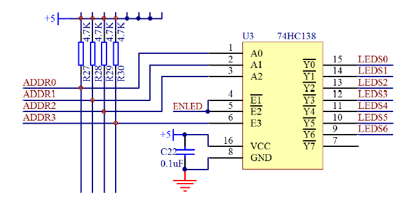

本篇为KingST的C51单片机的学习笔记，Cheaper 3为讲解一些硬件知识。
Chapter 3 一些硬件知识
硬件知识
去耦电容
※去耦电容的应用背景
由于电磁干扰（EMI），所以需要应用去耦电容。造成电磁干扰的主要有三种形式
①存在冬天空气干燥造成“静电放电”（ESD）
②电机设备使用时的干扰造成“快速瞬间群脉冲”（EFT）
③热插拔造成的“浪涌”（Surge）
基于上面的问题，所以诞生了电磁兼容（EMC）。
※耦电容的应用：大电容低频滤波，小电容高频滤波。
大电容（如原理图电源开关电路的C19）的作用为
①缓冲作用：上电瞬间，让电流缓慢流入电路。
②稳定作用：后级电路功率大小不一样，所需电流也不一样，可能导致启动有先后，有电容就可以稳定整个电路的电压不会下降太多。
大电容的选取：
第一个参数是耐压值的考虑：一般为系统电压的1.5倍到2倍（一般单片机系统为5V），有些场合可以稍微再高一点。
第二个参数是电容容量的考虑：根据整套系统的功率消耗情况决定，如果系统耗电较大，波动可能比较大，容值就要选大一些的，反之可以小一些。
小电容（如原理图电源开关电路的C10）的作用为：滤除高频信号的干扰。一般在IC供电的地方都会加上这个小电容，在布线的时候还会考虑尽可能靠近IC。
小电容的选取：在电源处的去耦高频电容，直接选用0.1μF（104电容⇒10×10^4pF=100nF=0.1μF）。

三极管
三极管是模拟电路和数字电路中经常会用到的一个器件，三极管可分为PNP型三极管和NPN型三极管。三极管一共有3个极，横向左侧的的引脚叫作基极b（base），中间的箭头一头连接基极，一头连接发射极e（emitter），剩下一个引脚就是集电极c（collector）。

※三极管的原理
三极管的关键点在于b极和e极之间的电压关系。以PNP型为例，e极电压只要高于b极电压0.7V以上，这个三极管的e极和c极之间就是顺利导通的。也可是说控制端在b和e之间，被控制端在b和c之间。如原理图所示，当P1.0处于高电平（5V）的时候，e和b之间无压降，所以三极管e和c之间不导通，LED就不亮；当P1.0处于低电平（0V）的时候，e和b之间有压降且大于0.7V，三极管e和c之间导通，LED就亮。（e和c之间大概会有0.2V的压降）

三极管有三种状态：截止状态，饱和状态和放大状态。通常截止和饱和在数字电路上用的比较多，放大在模拟电路上用的比较多。
截止状态：e和b之间不导通。
饱和状态：e和b之间导通，且b极的电流要大于ec间的电流除以β（β为三极管的放大倍数，常用的大概可以认为是100）。
放大状态：e和b之间导通，且b极的电流要等于ec间的电流除以β。
上图LED的压降为2V，ec之间的压降为0.2V（先忽略不计），则R41的压降为3V，因此，ec之间的电流为3mA。如果eb要导通，那么eb间的最小电流就是30μA，那么R47最大的阻值为4.3V（5V减去0.7V的压降）除以30μA，为143kΩ。R47只要小于这个阻值就行了，但也不能过于小，单片机的IO输入电流太大会烧坏，STC89C52的最大输入电流推荐小于6mA。
※三极管的应用
三极管的控制应用：控制应用，驱动应用
控制应用：如图所示为NPN型三极管，当IO口输出5V高电平的时候，三极管导通，OUT输出低电平；当IO口输出0V低电平的时候，三极管截止，OUT则由于上拉电阻R2的作用而输出12V的高电平。

驱动应用：如图IO口直接驱动LED的话，第一种方式IO口电流承受能力有限，一般为6mA，如果LED数量多了，单片机就会受不了。第二种方式IO口电流输出能力有限，一般不到1mA，LED可能点不亮或者亮度很低。

所以就需要用三极管来驱动，如图所示为NPN型三极管来驱动LED，当IO口是高电平的时候，三极管导通，LED就能够被点亮了（9013三极管可以通过500mA的电流）。

74HC245
74HC245是个双向缓冲器。如果LED多起来的话，总体的电流也相当高，所以需要一个缓冲器来缓冲电流。
其中1号引脚DIR为方向引脚，如果DIR为高电平，右侧B编号引脚的电压等于左侧A编号引脚对应的电压；如果DIR为低电平，左侧A编号引脚的电压等于右侧B编号引脚对应的电压。
19号引脚OE为使能引脚，叫作输出使能，引脚上的一横表示这个引脚为低电平有效，即OE引脚接低电平时，芯片才工作。

74HC138（三八译码器）
74HC138是一种数字芯片，它可以由简单的输入逻辑来控制逻辑输出三八译码器，就是可以吧3种输入状态翻译成8种输出状态。
其中4号引脚E1、5号引脚E2和6号引脚E3为使能引脚，当E1和E2为低电平，E3为高电平时，芯片才工作。
其中A0、A1、A2为输入端，Y0-Y7为输出端。

*以下为74HC138的输入输出端的真值表
| A2 | A1 | A0 | ⇒ | Y0 | Y1 | Y2 | Y3 | Y4 | Y5 | Y6 | Y7 |
|---|---|---|---|---|---|---|---|---|---|---|---|
| 0 | 0 | 0 | ⇒ | 0 | 1 | 1 | 1 | 1 | 1 | 1 | 1 |
| 0 | 0 | 1 | ⇒ | 1 | 0 | 1 | 1 | 1 | 1 | 1 | 1 |
| 0 | 1 | 0 | ⇒ | 1 | 1 | 0 | 1 | 1 | 1 | 1 | 1 |
| 0 | 1 | 1 | ⇒ | 1 | 1 | 1 | 0 | 1 | 1 | 1 | 1 |
| 1 | 0 | 0 | ⇒ | 1 | 1 | 1 | 1 | 0 | 1 | 1 | 1 |
| 1 | 0 | 1 | ⇒ | 1 | 1 | 1 | 1 | 1 | 0 | 1 | 1 |
| 1 | 1 | 0 | ⇒ | 1 | 1 | 1 | 1 | 1 | 1 | 0 | 1 |
| 1 | 1 | 1 | ⇒ | 1 | 1 | 1 | 1 | 1 | 1 | 1 | 0 |
闪烁LED
根据开发板的原理图编写程序。如图所示

如LED小灯整体电路图所示要让LED2点亮的话，Q16三极管需要导通，且DB0为低电平。
Q16三极管需要导通的话基极为低电平，即LEDS6需要为低电平，即74HC138的9号引脚Y6输出低电平。查真值表可知，需要A2为高电平，A1为高电平，A0为低电平，即ADDR2为高电平，ADDR1为高电平，ADDR0为低电平。同时要让74HC138芯片工作，需要ADDR3为高电平，ENLED为低电平。根据图显示译码和步进电机跳线和单片机电路图所示，即为单片机的P1.0需要低电平，P1.1需要高电平，P1.2需要高电平，P1.3需要高电平，P1.4需要低电平。这时三极管就导通了。
DB0连接74HC245的右侧引脚B1，要使B1为低电平的话需要左侧引脚A1为低电平，即DB_0为低电平。DB_0连接到单片机的P0.0引脚上，即P0.0需要低电平，LED就亮。


最终的闪烁程序：
1 |
|